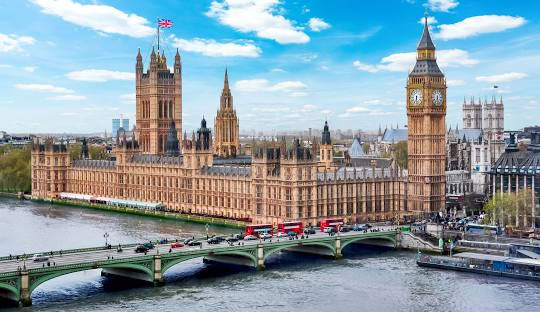
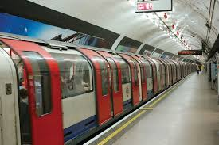
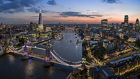

London is the capital and largest city of both England and the United Kingdom, with a population of around 8.8 million, and its metropolitan area is the largest in Western Europe, with a population of 14.9 million. It stands on the River Thames in south-east England at the head of a 50-mile (80 km) estuary down to the North Sea and has been a major settlement for nearly two millennia. The City of London, its ancient core and financial centre, was founded by the Romans as Londinium and retains its medieval boundaries. The City of Westminster, to the west of the City of London, has for centuries hosted the national government and parliament. In the 19th century, London grew rapidly, becoming the world's largest city at the time, as it expanded and absorbed the neighbouring county of Middlesex, and parts of Surrey and Kent. In 1965 it was combined with parts of Essex and Hertfordshire to create the administrative area of Greater London, which is governed by 33 local authorities and the Greater London Authority.
As one of the world's major global cities, London exerts a strong influence on world art, entertainment, fashion, commerce and finance, education, health care, media, science and technology, tourism, transport, and communications. Despite a post-Brexit exodus of stock listings from the London Stock Exchange, London is still Europe's most economically powerful city, and it remains one of the major financial centres in the world. With Europe's largest concentration of higher education institutions,[21] it is home to some of the highest-ranked academic institutions in the world—Imperial College London in natural and applied sciences, the London School of Economics in social sciences, and the comprehensive University College London.[22][23] London is the most visited city in Europe and has the busiest city airport system in the world.[24] The London Underground is the oldest rapid transit system in the world.
The London Underground (also known simply as the Underground or by its nickname the Tube) is a rapid transit system serving Greater London and some parts of the adjacent home counties of Buckinghamshire, Essex and Hertfordshire in England. The Underground has its origins in the Metropolitan Railway, opening on 10 January 1863 as the world's first underground passenger railway. It is now part of the Circle, District, Hammersmith & City and Metropolitan lines. The first line to operate underground electric traction trains, the City & South London Railway in 1890, is now part of the Northern line. The network has expanded to 11 lines with 250 miles (400 km) of track. However, the Underground does not cover most southern parts of Greater London; there are only 33 Underground stations south of the River Thames. The system's 272 stations collectively accommodate up to 5 million passenger journeys a day. In 2020/21 it was used for 296 million passenger journeys, making it one of the world's busiest metro systems. The system's first tunnels were built just below the ground, using the cut-and-cover method; later, smaller, roughly circular tunnels—which gave rise to its nickname, the Tube—were dug through at a deeper level.Despite its name, only 45% of the system is under the ground: much of the network in the outer environs of London is on the surface.
